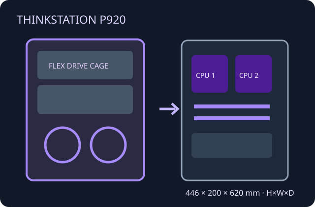

[ DUAL-SOCKET XEON TOWER ]
Lenovo ThinkStation P920
Large dual-processor workstation with a deliberately engineered cooling and drive-cage arrangement; confirm chassis FRU and options.

Specifications & fit
| Model / revision | ThinkStation P920 dual-socket workstation; verify machine type and installed generation of CPU, riser and storage hardware. |
|---|---|
| Board form factor | Lenovo proprietary dual-socket system board; it is not standard E-ATX despite its larger footprint. |
| Dimensions | 446 × 200 × 620 mm (H × W × D). |
| PSU | OEM fixed high-capacity supply up to 1400 W (efficiency and rating depend on machine type); retain specified harness and inlet. |
| GPU / cooler / radiator fit | Lenovo lists multiple professional GPU configurations; permissible count and card combination depend on risers, slot spacing and PSU. Dual CPU heatsink/fan assemblies and airflow baffle are system-specific. No retail radiator envelope is specified. |
| Drive bays | Flexible OEM bays support combinations of 3.5-inch and 2.5-inch drives plus M.2 storage; carrier and flex-tray layouts determine actual positions and count. |
| Airflow | Directed front-to-rear airflow through CPUs, memory and PCIe areas; multiple fan modules and internal air guides are part of the thermal design. |
| Serviceability / compatibility | Service by P920 maintenance procedures; label trays, fans, risers and cables and retain all CPU/memory baffles. No standard ATX board or PSU compatibility is implied. |
Manufacturer sources
- Lenovo PSREF — ThinkStation P920Platform layout, storage, power and configuration limits.
- Lenovo — ThinkStation P920 datasheetManufacturer workstation overview and fit context.
- Lenovo Support — ThinkStation P920 guidesOfficial service and user-documentation route.